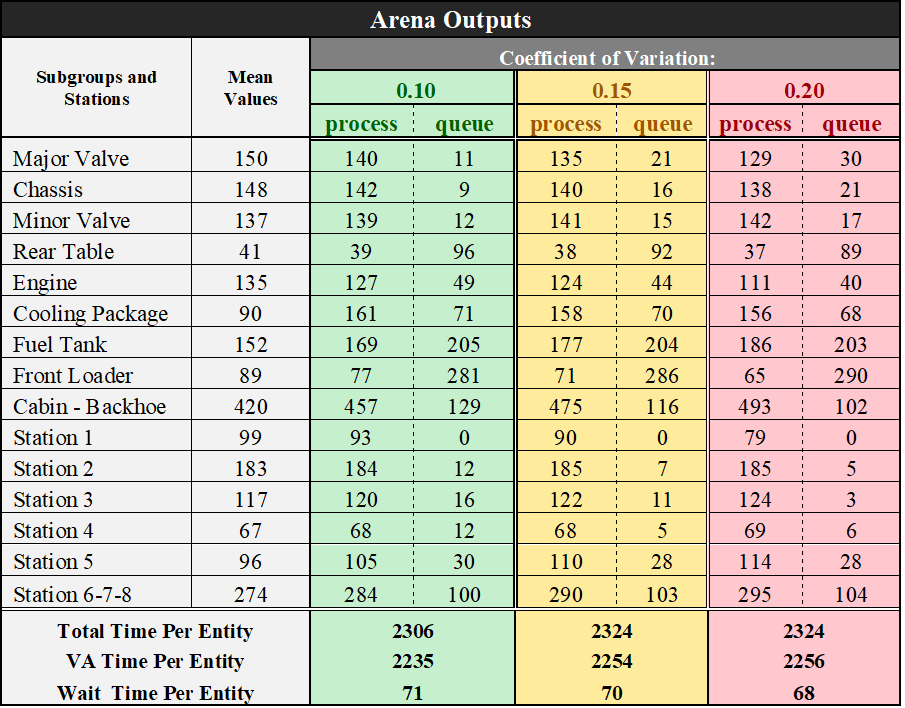

Sonuç
Analizimiz, şirketin talebi üzerine TLB Montaj Hattı’nın düzenini ve işletme prosedürlerini inceleyerek başladı. Başlangıçta, detaylı alt grup değerlendirmelerine odaklandık, hem alt gruplar hem de montaj hattı için ölçümler aldık. Daha sonra, alt gruplar içindeki iş akışını inceledik ve önemli verimsizlikleri belirledik. Bu verimsizlikler, alan içinde aşırı stoktan kaynaklanıyor gibi görünüyordu ve bu da alanın optimize edilmemiş kullanımına yol açıyordu.
Sonuç olarak, iş alanı geniş bir mesafeye yayıldı ve bu da geniş çaplı operatör hareketi gerektirdi ve verimsizliklere yol açtı. Alan verimliliğini artırmak için, lojistik alanını yeniden düzenlemeye ve lojistikten alt gruplara gerekli ürünleri taşımak için kit arabaları kullanmaya karar verdik. Ayrıca, bir operatörün iki uzak alt grupta aynı anda çalışması önemli bir israfta sonuçlandığını gözlemledik. Bu faktörleri göz önünde bulundurarak, alt gruplar arasındaki ilişkileri incelemek için bir faaliyet ilişki diyagramı oluşturduk ve bu, gelecekteki iyileştirmeler için değerli bilgiler sağladı.
Montaj hattındaki zamanımız boyunca, operatörlerin görevleri eşit sürelerde gerçekleştirmediklerini fark ettik. Bunu ele almak için, operatörlere görevlerin optimal olarak nasıl dağıtılacağını belirlemek için bir simülasyon gerçekleştirdik. Temel hedefimiz çerçevesinde, düzen planlama ve hat dengeleme süreçlerine odaklandık. Alt gruplar arasındaki etkileşimi ve hareketli montaj hattını dikkate alarak, montaj hattımızın etkinliğini artırmak için iyileştirilmesi gereken istasyonları belirlemek için Arena simülasyon programını kullandık.
İsraf Tablomuz
- NVAA: Katma Değer Dışı Aktiviteler
- WCM: Dünya Standardında Üretim
- OHS: İş Şağlığı ve Güvenliği
| Alt Grup | Açıklama | Tür |
|---|---|---|
| Valf ve Şasi | 2WS arka dingillerinin 4WS dingillerine benzer açık paletlerle gelmesi ve operatörün paketleri açması, verimsizlik ve zaman kaybına neden olur. | NVAA |
| Valf ve Şasi | Operatörlerin şasiyi montaj alanına çekmesi ve bu durum zaman kaybına ve işgücünün verimsiz kullanımına neden olur. | NVAA |
| Valf ve Şasi | Stabilizatör ve şasi alt gruplarında çalışan operatörün aynı olmasına rağmen ilgili alt grupların birbirine yakın olmaması verimliliği azaltabilir. | NVAA |
| Valf ve Şasi | Büyük valfin monte edilmiş halini şasiye daha yakın getirme sürecinde uygun ekipman kullanılmaması alt montaj alanında zaman kaybına neden olur. | NVAA |
| Valf ve Şasi | Montaj iş istasyonu ile araç takımı arasındaki mesafe nedeniyle fazla adım atılması. | NVAA |
| Valf ve Şasi | 4WS ve 2WS dingilleri arasındaki sürekli değişiklik nedeniyle bekleme süresi kaybı oluşur. | NVAA |
| Ön Yükleyici | Ön yükleyicinin montajı sırasında ön yükleyicinin kaldırılması ve montaj masasına taşınması sırasında katma değer dışı zaman kaybı oluşur. | NVAA |
| Ön Yükleyici | Pistonları çalışma alanından kaldırarak, ön yükleyici kit tedarik arabasına yerleştirme ile katma değer dışı zaman kaybı ortadan kaldırılır. | NVAA |
| Ön Yükleyici | Ön yükleyici alt grubunda kullanılan araç takımlarını montaj bankosuna yakınlaştırarak, katma değer dışı zaman kaybı ortadan kaldırılır. | NVAA |
| Hidrolik-Yakıt | Hidrolik ve yakıt tankı yükseklik ayarlı banko ile monte edilmelidir. | WCM |
| Hidrolik-Yakıt | Hidrolik tankının alt vidalarını sıkarken, işlem vinç altında gerçekleştirilir. | OHS |
| Hidrolik-Yakıt | Montaj masasına hava tabancasının asılacağı belirli bir konum sağlanmalıdır. | WCM |
| Hidrolik-Yakıt | Vidaların ve araç takımlarının operatörün el seviyesinde olacağı bir yükseltici yapılmalıdır. | WCM |
| Arka Tabla | Pistonları kaldırırken ve dönme kulesini montaj alanına getirirken potansiyel bir risk oluşur. | OHS |
| Arka Tabla | Arka masa kit bileşenlerinin ve pistonlarının masadan uzak olması verimliliği azaltır ve zaman kaybına neden olur. | NVAA |
| Arka Tabla | Mühürlü karton paketlerinin açılması pistonlar için gecikmelere ve üretkenlikte aksaklıklara neden olabilir. | NVAA |
| Arka Tabla | Bu alanda bekleyen batarya ve motor gibi ürünlerin, bu alt gruba ait olmaması, karmaşaya ve verimsizliğe neden olur. | NVAA |
Bu tablo, analizimiz sırasında alt gruplarda gözlemlenen zorlukların genel bir özetini sunmaktadır; bunlar, yalın üretim prensipleriyle uyumlu olmayan durumları içermektedir. Tabloda vurgulanan temel sorunlar arasında zaman ve işgücünün etkisiz kullanımı, Katma Değer Dışı Aktiviteler (NVAA) ile ilişkili koşulların varlığı ve iş sağlığı ve güvenliğine yönelik risk oluşturan durumların belirlenmesi bulunmaktadır. Bu sorunları gelecekteki çalışmalarımızda ele almak, optimal verimliliği artırmak, katma değer dışı faaliyetleri ortadan kaldırmak ve iş sağlığı ve güvenliğini öncelikli kılan bir iş yeri ortamı sağlamak için anahtardır.
Arena Çıktısı

Grafikler
Bu grafik, üç farklı senaryo boyunca her parça için zaman dağılımının gösteriyor. Bu grafikteki parça bir TLB’yi temsil eder. “Bekleme Süresi”, bir parçanın belirli bir işlem başlamadan önce sıraya alınarak geçirdiği süreyi temsil eder. Bu bekleme süresi, bazı operatörlerin farklı alt gruplara ait montajlarda çalışması nedeniyle gerçekleşir. Dolayısıyla, bir parça geldiğinde belirli bir operatör uygun değilse, parça, operatör işlemi başlatana kadar sıraya alınır. Buna karşılık, “Katma Değer Süre” metriği, bir parçanın bir montaj içinde geçirdiği gerçek işleme süresini temsil eder. Son olarak, “Toplam Süre” basitçe bekleme süresi ve katma değer süresinin toplam süresidir. Grafikten anlaşıldığı üzere bir TLB’nin tamamlanması için geçen toplam süre yaklaşık olarak 39-40 saattir ve bu süre şirket tarafından sağlanan verilerle uyumludur.
Bu grafik, her alt grup ve istasyonun işlem sürelerini, yani her parça için işlem modüllerinde geçirilen toplam süreyi göstermektedir. Burada, backhoe alt grubunun en uzun işlem sürelerine sahip olduğunu, arka tabla alt grubunun ise en kısa süreye sahip olduğunu açıkça görebiliyoruz. Backhoe alt grubu için, parçaların gerektiği anda doğrudan çalışma istasyonuna teslim edildiği bir tek parça akış sistemi uygulayabiliriz; bu sayede hareket ve bekleme sürelerini en aza indirir ve insan becerisi gerektirmeyen tekrarlayan görevleri otomatikleştirerek operatörlerin daha karmaşık görevler için serbest kalmasını sağlayabiliriz.
Bu grafik, her istasyonda farklı alt gruplar için beklemeye ilişkin süre dağılımlarını göstermektedir. Ön Yükleyici alt grubunun en uzun kuyruklara sahip olduğunu, bu durumun önündeki istasyonda bir potansiyel darboğaza işaret ettiğini göstermektedir. Ancak gecikmenin nedenini belirlemek için daha detaylı bir analiz gerekmektedir. Bu istasyonun süreçlerini düzenlemek, verimliliği önemli ölçüde artırabilir. Buna karşılık, 4. İstasyon’da Ana Gövde 4 işleminin en kısa bekleme sürelerini sergilediği görülmektedir.